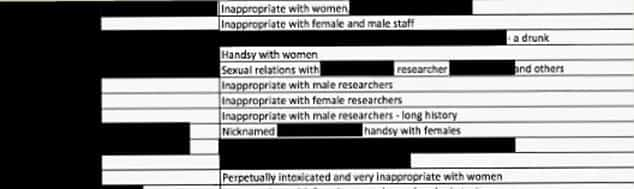

Mr Jones said the women spoke to his office on the basis of confidentiality.
— Welsh First Minister Carwyn Jones, describing how he denied due process to a “friend” who then committed suicide
Carl Sargeant, a Minister until last week in the Welsh Government, has committed suicide after being very amorphously accused of sexual harassment. His boss, Wales’ First Minister Carwyn Jones, apparently didn’t bother to inform him as to what the allegations were.
Instead of giving his “friend” even a modicum of due process, Jones, the head of the Welsh Labour Party, handed the allegations to political apparatchiks to investigate, rather than the independent civil service or police. He railroaded Sargeant and promised to make “confidentiality” for the accusers his top priority.
Once more, the big thing missing is evidence. None has been provided so far. None was provided to Carl Sargeant before his death. Nearly 15 years in the Welsh Assembly counted for nothing when it came to Sargeant’s prospects of keeping his job or merely being afforded the chance to defend himself.
Carwyn Jones, Welsh First Minister, fired Carl Sargeant without even telling him what the allegations against him were.
The way the dead man has been treated vindicates an article I wrote not long ago comparing modern-day “rape” witch-hunts to the tactics and procedures of Stalinism. Just as in the heyday of the Soviet Union, anonymous denunciations without evidence (and without giving the accused the chance to properly respond) are enough to ruin the livelihoods of those in the firing line.
This travesty also resembles dystopian great literature. In Franz Kafka’s novel The Trial, the protagonist Josef K. is treated as a criminal, irrespective of not knowing the charges against him. This is the same treatment that Carl Sargeant received, except in his case the allegations were probably not even of a criminal nature.
Is suicide an overreaction? Perhaps, perhaps not
After eating their own for a long time, the left is now killing them.
There are going to be many people—and yesterday I was one of them—who think that Carl Sargeant overreacted in taking his own life. Nevertheless, we do not know the circumstances of his life or how many others might have attacked (or threatened) him personally after he was fired as a government minister. Much has been made about Sargeant “stepping down,” but given he was already suspended by his party, his high-profile job was as good as gone.
There is no doubt that Carl Sargeant furthered an anti-male agenda while in office. At the beginning of this month, he was Cabinet Secretary for Communities and Children. Before that, he had been Minister for Social Justice. I do not want to engage in schadenfreude, yet Sargeant was well and truly aware of the reputational damage that comes the way of men accused of any “indiscretions” against women, oftentimes years after “events” take place.
As the witch-hunts in the West multiply, there are going to be men who, for reasons of mental illness or strained personal circumstances, either kill themselves or ruin themselves with substance abuse after being denounced. “There but for the grace of God go I” is frequently going to be the appropriate response to these situations. Without the red pill we have all swallowed, how would we fare in Carl Sargeant’s position? We just don’t know.
It’s time to weaponize Carl Sargeant’s death and those of others like him

Vague, anonymous and unsubstantiated allegations like “inappropriate” behavior are driving a number of British Members of Parliament at Westminster to fear losing their jobs as well.
Another British man, youngster Jay Chesire, committed suicide after a patently false allegation of rape in 2015. Amidst the waves of “harassment” free-for-alls that have hit newsstands over the last decade, how many others have also taken their own lives in response to unsubstantiated claims?
Call it distasteful, yet these deaths do indeed need to be politicized. At the moment, away from Cardiff and over in London, a number of male British Members of Parliament (MPs) face losing their jobs after a “dossier” of words (no proof!) began circulating in the media. Buzzwords like “inappropriate” behavior, which are never defined, let alone proven, are all that is necessary for these men to be attacked and face the prospects of losing their careers.
The loss of one’s livelihood is bad enough. But it can get worse than that and I am sure many of those accused of usually baseless claims of sexual harassment have contemplated taking their own lives. In the future, more of them will, too.
Deaths like Carl Sargeant’s are exactly what is going to happen when Western society substitutes witch-hunts for properly verifying claims and innocence before guilt.
Read More: British Socialist Politician Says Eating Disorders Are Caused By Female Narcissism